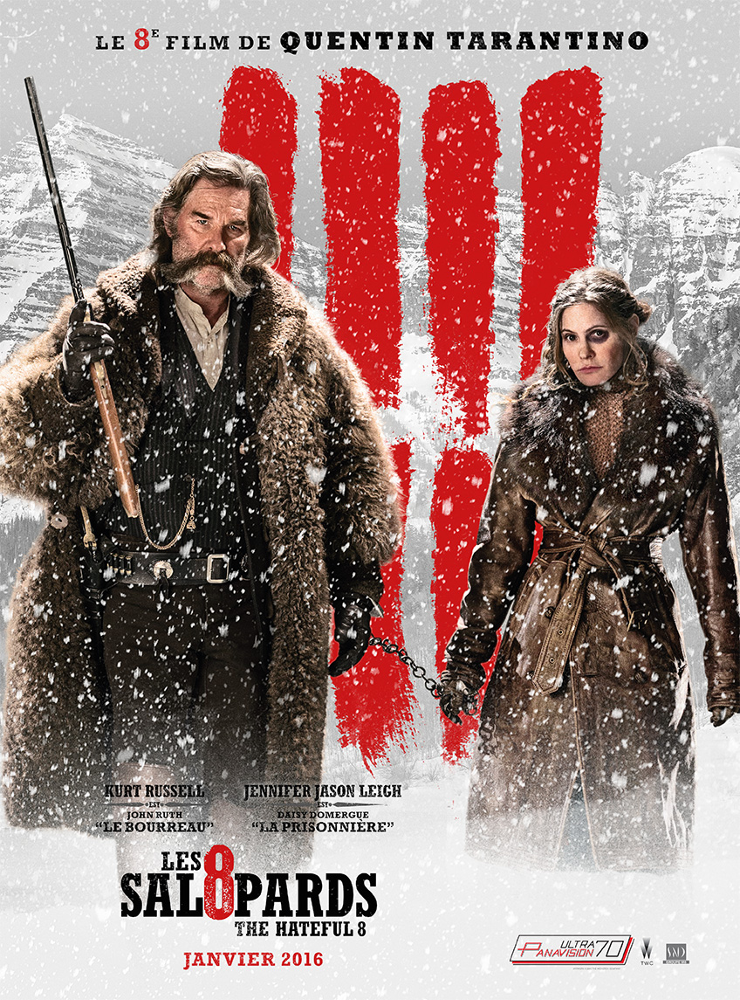

LA TOUR DE CONTROLE INFERNALE

Résumé
Octobre 1981. Ernest Krakenfield et Bachir Bouzouk sont deux brillants pilotes de l’armée française. Suite à une malencontreuse erreur au cours d’un test de centrifugeuse, ils perdent une partie de leur potentiel intellectuel. L’armée voulant les garder dans l’aviation, on leur trouve un poste de bagagistes à Orly Ouest. Et là.... La genèse des aventures de nos deux laveurs de carreaux de la Tour Montparnasse Infernale !
LES HUIT SALOPARDS

Résumé
Quelques années après la Guerre de Sécession, le chasseur de primes John Ruth, dit Le Bourreau, fait route vers Red Rock, où il conduit sa prisonnière Daisy Domergue se faire pendre. Sur leur route, ils rencontrent le Major Marquis Warren, un ancien soldat lui aussi devenu chasseur de primes, et Chris Mannix, le nouveau shérif de Red Rock. Surpris par le blizzard, ils trouvent refuge dans une auberge au milieu des montagnes, où ils sont accueillis par quatre personnages énigmatiques : le confédéré, le mexicain, le cowboy et le court-sur-pattes. Alors que la tempête s’abat au-dessus du massif, l’auberge va abriter une série de tromperies et de trahisons. L’un de ces huit salopards n’est pas celui qu’il prétend être ; il y a fort à parier que tout le monde ne sortira pas vivant de l’auberge de Minnie…
AU NOM DE MA FILLE
Résumé
Un jour de juillet 1982, André Bamberski apprend la mort de sa fille Kalinka. Elle avait 14 ans et passait ses vacances en Allemagne auprès de sa mère et de son beau-père le docteur Krombach. Rapidement, les circonstances de sa mort paraissent suspectes.